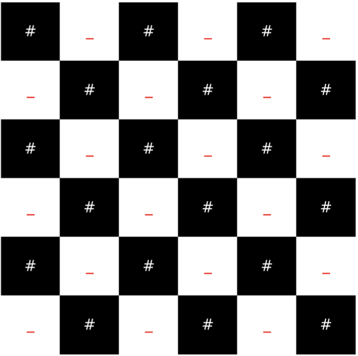

In the kingdom of CodeLand, a royal artisan has been tasked with designing a beautiful, alternating pattern for the castle's grand floor. The pattern must follow strict rules—each tile must alternate between two symbols:# and _, just like a classic chessboard.
The artisan, however, is struggling to create the pattern for different floor sizes. The king has requested a program that, given a number nn, generates an n×nn×n board with the alternating pattern. Can you help create the perfect design?
You are given as input an integer n (1 ≤ n ≤ 20)
representing the size of a nxn board.
A n×n grid where each cell alternates between #
and _. The top-left square should always be #.
Input 2
3
Output 2
#_# _#_ #_#
Input 2
4
Output 2
#_#_ _#_# #_#_ _#_#